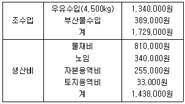
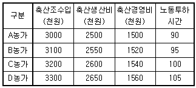
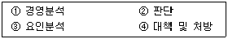
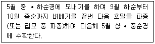

축산산업기사 (2011-10-02 기출문제)
1과목: 가축번식 육종학
1. 다음 중 소에 있어서 가장 이상적인 정액 채취법은?
- 인공질법
- 마사지법
- 전기자극법
- 질내채취법
(정답률: 77%)

2. 다음 중 분만의 과정 설명으로 부적합한 것은?
- 자궁경관 확장기에는 태아의 태향과 태세가 변화된다.
- 태아 만출기에는 양막의 파열이 일어난다.
- 태반 만출기에는 태아 만출 후 태반이 만출 될 때까지의 시기이다.
- 자궁수축이 가장 강력한 시기는 태반 만출기이다.
(정답률: 68%)
3. 돼지의 분만 징후를 바르게 설명한 것은?
- 피부가 건조하며 모둠 숨을 쉬고 운다.
- 자리깃을 물어다 새끼 보금자리를 만든다.
- 식욕이 왕성해져 무리에서 떨어진다.
- 꼬리를 자주 움직이며 사타구니에 땀이 난다.
(정답률: 77%)
4. 형매검정을 가장 효과적으로 이용할 수 있는 축종은?
- 젖소
- 고기소
- 돼지
- 닭
(정답률: 57%)
5. 알의 모양을 나타내는 지수는?
- 난중지수
- 난질지수
- 난각지수
- 난형지수
(정답률: 84%)
6. 돼지의 육돈생산을 위하여 가장 권장하는 교배법은?
- 퇴교배
- 상호역교배
- 3품종 종료교배
- 윤환교배
(정답률: 77%)
7. 후대검정(progeny test)에 대한 설명으로 옳은 것은?
- 개체 자신의 능력을 기준으로 선발하는 방법이다.
- 일반적으로 수가축보다는 암가축의 선발에 많이 이용된다.
- 세대 간격을 짧게 하여 단위시간당 개량량을 증가시킬 수 있다.
- 도살해야만 측정할 수 있는 형질을 개량할 때 유익한 방법이다.
(정답률: 79%)
8. 젖소의 주요 경제적 형질 중 유전력(%)이 가장 작은 것은?
- 비유량
- 사료효율
- 번식능률
- 유지생산량
(정답률: 70%)
9. 고환의 하강이란 고환이 복강으로부터 내서경륜과 서경관을 거쳐 음낭까지 도달하는 과정을 말한다. 그러나 때로는 복강내장이 초상돌기를 통해서 음낭내로 침입하는 경우가 있으며, 흔히 돼지에서 발생되는 현상은?
- 잠복정소
- 음낭헤르니아(scrotal hernia)
- 거세(castration)
- 요도구선(urethral gland)
(정답률: 81%)
10. A품종 돼지의 평균산자수가 8두, B품종 돼지의 평균산자수가 10두이고, 이 두 품종의 교배에 의한 F1의 평균산자수가 12두인 경우의 잡종강세 강도는 약 얼마인가?
- 10.0%
- 13.3%
- 25.5%
- 33.3%
(정답률: 63%)
11. 소의 유산과 관련 있는 전염병은?
- 비브리오
- 브루셀라병
- 트리코모나스
- 렙토스피라
(정답률: 80%)
12. 성호르몬은 생산부위에 따라 분류하는데 생산부위가 아닌 곳은?
- 소장
- 시상하부
- 뇌하수체 전엽
- 생식선
(정답률: 84%)
13. 닭의 성장률과 가장 밀접한 관계를 가지며 변이가 적은 형질은?
- 뿌리의 크기
- 정강이 길이
- 흉각도
- 흉골길이
(정답률: 83%)
14. 암컷 생식기관내에서 정자와 난자가 수정되는 곳은?
- 자궁각
- 수란관 팽대부
- 수란관
- 자궁체
(정답률: 76%)
15. 아침에 암퇘지의 허리를 눌러 보았더니 가만히 서서 수컷을 허용하는 자세를 취하였다. 이 돼지의 교배 적기는?
- 당일 오전에서 오후에 걸쳐서
- 당일 오후에서 다음날 아침에 걸쳐서
- 당일 오전부터 밤에 걸쳐서
- 다음 날 낮 동안에
(정답률: 76%)
16. 국내에서 많이 사용하고 있는 홀스타인 종 젖소는 잡종 교배에 이용하지 않고 있다. 그 주 이유는 무엇인가?
- 젖소의 품종간 교배에 의한 잡종은 비유량과 유지량에 있어서 잡종강세를 전혀 나타내지 않기 때문이다.
- 홀스타인종이 다른 품종의 젖소보다 수입단가가 싸기 때문이다.
- 잡종의 비유능력이 홀스타인종 순종의 능력을 초과하지 못하기 때문이다.
- 국민이 백흑반의 홀스타인종을 좋아하기 때문이다.
(정답률: 72%)
17. GOODALE과 HAYS등이 제시한 초년도 산란수를 지배하는 요소와 가장 관계가 먼 것은?
- 동기 휴산성
- 취소성
- 사료효율
- 조숙성
(정답률: 65%)
18. 잡종 번식은 순종 번식에 비하여 성성숙 시기가 어떻게 변화되는가?
- 단축된다.
- 지연된다
- 영향이 없다.
- 품종에 따라 다르다.
(정답률: 68%)
19. 소에 있어 임신진단법으로 활용되지 않은 것은?
- 직장검사법
- 발정재귀법
- 초음파 진단법
- X선 조사법
(정답률: 69%)
20. 임신과 가장 관계있는 호르몬은?
- 발정 호르몬
- 웅성 호르몬
- 옥시토신
- 황체 호르몬
(정답률: 70%)
2과목: 가축사양학
21. 메치오닌, 시스테인, 라이신의 함량이 높고 비타민 B와 특히 리보플라빈과 나이아신의 함량이 높으며 미지성장인자를 함유하고 있는 동물성 사료는?
- 혈분
- 어분
- 피혁분
- 우모분
(정답률: 72%)
22. 동물이 섭취하는 영양소는 그 종류가 다양하다. 이 중 크게 나누어 에너지를 공급하는 3대 영양소에 포함되지 않는 것은?
- 단백질
- 지방
- 탄수화물
- 무기물
(정답률: 85%)
23. 동물의 체유지와 영양에 관한 설명으로 바르게 설명된 것은?
- 반추동물의 완전기아는 단위동물보다 빠르다.
- 반추 동물의 메탄가스 발생은 주로 단백질에 기인한다.
- 내생질소량에 도달하는 시기는 고단백질 사료를 먹이면 빨리 도달한다.
- 절식대사는 완전기아상태에서 일어나는 대사를 말한다.
(정답률: 66%)
24. 육계의 급사증후군에 대한 설명이 잘못된 것은?
- 심장질환의 일종으로 우심실이 많이 이완되고 있다.
- 성장이 빠른 2~3주령에 많이 발생한다.
- 초기성장 제한을 통하여 발생을 억제할 수 있다.
- 성별에 관계없이 동일하게 나타난다.
(정답률: 64%)
25. 일반적인 가축의 경우 칼슘(Ca):인(P)의 적합한 비율은? (단, 산란계의 경우는 제외한다.)
- 1:1 ~ 1:3
- 1:1 ~ 2:1
- 1:1 ~ 1:4
- 1:1 ~ 6:1
(정답률: 76%)
26. 소화율에 영향을 미치지 않는 것은?
- 사료의 무기물 함량
- 사료의 조섬유 함량
- 가축의 종류
- 가축의 품종
(정답률: 56%)
27. 비타민 B12의 성분인 미량광물질은?
- 요오드(I)
- 철(Fe)
- 구리(Cu)
- 코발트(Co)
(정답률: 69%)
28. 임신한 가축의 가장 적절한 사양방법은?
- 전 임신기간을 통해 높은 수준의 사료를 준다.
- 임신 중기에 높은 수준의 영양소 함유 사료를 준다.
- 임신 초기에 높은 수준의 영양소 함유 사료를 준다.
- 임신 후반기에 높은 수준의 영양소 함유 사료를 준다.
(정답률: 76%)
29. 호마박(참깨묵)의 영양적 특성 설명으로 틀린 것은?
- 기호성이 좋지 않으며, 아미노산의 이용율이 떨어진다.
- 대두박과 혼용하면 상호보완작용을 나타내어 좋은 효과가 있다.
- 필수 아미노산 중 lysine 함량은 높으나 methionine 함량은 낮다.
- 호마박을 주로 급여하면 Zn 결핍증과 유사한 증상을 보인다.
(정답률: 49%)
30. 유지율이 3%인 우유 45kg은 4% FCM(유지율보정유)으로 환산하면 얼마인가?
- 36.50Kg
- 38.25Kg
- 40.00Kg
- 41.⑤Kg
(정답률: 61%)
31. 다음 중 돼지의 체지방을 희고 단단하게 하는 사료는?
- 대두박
- 쌀겨
- 보리
- 옥수수
(정답률: 79%)
32. 계란에서 난황의 색을 노란색으로 나타나게 하는 것은?
- 토코페롤
- 비타민 B1
- 비타민 D
- 크산토필
(정답률: 65%)
33. 사료용 탤로우를 사용할 때의 이점이 아닌 것은?
- 저에너지 사료를 만들 수 있다.
- 사료의 맛을 개선한다.
- 사료공장에서 먼지가 나지 않게 한다.
- 브로일러에 급여할 경우 육질이나 색을 좋게 한다.
(정답률: 76%)
34. 유지에너지의 요구량과 관계있는 인자에 대한 설명 중 틀린 것은?
- 방목지의 초질과 초량에 따라 운동량에 차이가 있으므로 에너지요구량에 차이가 있다.
- 외부온도가 떨어지면 에너지 요구량에 영향이 있다.
- 임계온도는 같은 가축에서 연령에 따라 차이가 없으므로 에너지 요구량도 차이가 없다.
- 단백질 함량이 많은 사료는 연량증가량이 많으므로 유지에너지 양도 증가한다.
(정답률: 76%)
35. 가축에 부족하게 되면 부전각화증이 발생하고 모피의 형성이 저해를 받게 되며 또한 번식관련 조절호르몬인 난포자극호르몬(FSH)과 황체호르몬(LH)의 기능을 조절하는 광물질은?
- Fe
- Mn
- Zn
- Co
(정답률: 72%)
36. 닭의 C/P율에 대한 설명으로 옳지 않은 것은?
- 닭이 성장함에 따라 C/P율이 커진다.
- 산란율이 높을수록 C/P율이 커진다.
- 단백질 함량이 낮을수록 C/P율이 커진다.
- C/P율은 고정시키고, 칼로리를 높이고자 할 때 단백질 함량도 높여 주어야 한다.
(정답률: 47%)
37. 케톤증(ketosis)과 관련된 설명으로 옳지 않은 것은?
- 아세톤혈증(acetonemia)이라고도 한다.
- 고능력인 젖소에서 분만 후 수일에서 수주일 안에 일어나는 경우가 많다.
- 왼쪽 허구리에 팽만이 일어나고 복통 증세로 인하여 불안, 걱정, 식요절폐, 다리 벌림을 나타낸다.
- 대사 장애로 인한 케톤체의 과잉 생산과 저혈당증이 원인이다.
(정답률: 65%)
38. 젖소의 분만 전 • 후 대사적 장애를 예방하기 위한 영양적인 전략으로 적합하지 않은 것은?
- 사료의 건물섭취량 증가
- 조사료와 농후사료의 비율 증가
- 영양소 함량 증가
- 첨가제나 이온(음, 양이온)균형 사료 급여
(정답률: 64%)
39. 가축에게 급여되는 사료는 가축이 요구하는 비타민의 공급수단이 된다. 그러나 사료 내 비타민 함량이 항상 충분하지 않으므로 공급제에 의한 보충이 요할 때도 있다. 가축의 비타민 요구량은 항상 일정하지 않고 증가하거나 감소하게 되는데 공급량을 줄여도 되는 요인은?
- 배터리나 케이지 사육에 의해서 자기분식증이 억제된 때
- 심한 더위나 추위, 불량한 환기, 다습 또는 밀집사육 하였을 때.
- 사료내 지방함량이 높거나 불포화 지방산이 많이 함유 되었을 때.
- 가축의 생산능력이 낮아 저에너지 및 저단백질 사료가 급여되는 때.
(정답률: 49%)
40. 다음 중 영양가치에 의하여 분류한 사료는?
- 농후사료
- 섬유질사료
- 광물질 사료
- 다즙질사료
(정답률: 75%)
3과목: 축산경영학
41. 생산함수의 3영역에서 총생산(TPP), 평균생산(APP), 한계생산(MPP)의 관계에 대하여 설명으로 옳지 않은 것은?
- MPP와 APP가 같을 때 APP는 최고가 된다.
- MPP가 APP보다 클 때 APP는 증가한다.
- TPP가 최대일 때 MPP는 영(0)이 된다.
- TPP가 감소하면 MPP도 감소하지만 부(-)가 되지는 않는다.
(정답률: 56%)
42. 한우경영에서 농후사료 급여량을 2단위에서 4단위로 증가시키면, 총 증체량은 4단위에서 8단위로 증가하였을 때 한계생산력은?
- 1
- 2
- 3
- 4
(정답률: 67%)
43. 축산경영의 올바른 정의가 아닌 것은?
- 사료작물을 재배하여 축산물을 생산한다.
- 토지, 자본, 노동력을 이용하여 가축을 사양한다.
- 축산생산물을 가공하여 판매, 이용, 처분을 한다.
- 토지 위에 작용하는 자연력을 이용해 경제적 상품을 제 1로 하여 각종 공업원료를 생산한다.
(정답률: 71%)
44. 한계생산력이 평균생산력보다 클 경우에 해당하는 것은?
- 평균생산력은 증대한다.
- 평균생산력은 불변이 된다.
- 평균생산력은 감소한다.
- 한계생산력과 평균생산력은 병행한다.
(정답률: 72%)
45. 농기구를 200,000원에 구입하여 5년간 사용한 뒤 20,000원에 폐기처분 했다. 정액법으로 계산한 1년의 감가상각비는 얼마인가?
- 30,000원
- 32,000원
- 34,000원
- 36,000원
(정답률: 72%)
46. 다음 중 유동자본재가 아닌 것은?
- 농후사료
- 연료
- 착유기
- 동물약품
(정답률: 70%)
47. 초지의 평가방법 중 수익가격을 바르게 설명한 것은?
- 초지에서 생긴 연간 조수익을 사용일수로 나눈 것이다.
- 초지에서 생간 연간 순수익을 사용일수로 나눈 것이다.
- 초지에서 생긴 연간 조수익을 평균 자본이율로 나는 것이다.
- 초지에서 생간 연간 순수익을 평균 자본이율로 나눈 것이다.
(정답률: 36%)
48. 다음 중 기업적 축산경영의 설명으로 옳지 않은 것은?
- 고용노동 중심의 형태를 취한다.
- 가족노동의 대가가 비용으로 계산한다.
- 경영과 가계(家計)가 엄격히 분리된다.
- 축산경영의 목적이 순이익보다는 소득의 극대화에 있다.
(정답률: 52%)
49. 축산경영의 목표로서 가장 바람직한 것은?
- 소득 및 순수익의 극대화
- 사육규모 확대
- 노동생산력 향상
- 생산의 극대화
(정답률: 82%)
50. 다음 진단지표 중 잘못된 것은?
- 고정비율 = (자기자본 / 고정자본) × 100
- 유동비율 = (유동자산 / 유동부채) × 100
- 일당증체량 = (판매시체중 - 구입시체중)/사육일수
- 자본생산성 = 소득 / 노동회수량
(정답률: 66%)
51. 다음 중 대차대조표 등식을 옳게 나타낸 것은?
- 자산 = 부채 + 자본
- 자본 = 부채 + 자산
- 부채 = 자본 – 자산
- 자산 = 자본 - 부채
(정답률: 65%)
52. 비용함수가 TC = 100Y – 4Y2 + Y3일 때 평균비용 AC의 최소정은?
- 2
- 3
- 4
- 5
(정답률: 47%)
53. 축산경영에서 자가노동의 특성을 잘 나타내고 있는 것은?
- 노동의 질이 양호하다.
- 노동능률이 낮다
- 감독이 필요하다.
- 시간의 제한을 받는다.
(정답률: 75%)
54. 부분시산법을 이용하여 어느 특정한 경영부분을 변화시키고자 할 때 검토해야 할 사항이 아닌 것은?
- 감소되는 수입
- 생산기술 또는 기술계수
- 새로운 수입 또는 추가수입
- 새로운 비용과 추가비용
(정답률: 59%)
55. 다음의 경우 우유 1Kg당 생산비는?

- 약 230원
- 약 260원
- 약 290원
- 약 320원
(정답률: 38%)
56. 우리나라 축산경영에서 일반적인 노동력의 종류는?
- 품앗이와 고용노동
- 자가노동과 고용노동
- 자가노동과 가족노동
- 가족노동과 품앗이
(정답률: 70%)
57. 경영자본 이익률의 구성으로 옳은 것은?
- 경영자본회전율 × 매출액 이익률
- 경영자본 × 이익
- 경영자본 × 매출액 이익률
- 경영자본 × 매출액 이익
(정답률: 50%)
58. 축산경영의 의의로서 적합한 것은?
- 외국 축산물의 수입증대
- 수익의 최대화
- 경영자원의 비합리적 이용
- 경영조직의 비합리화
(정답률: 80%)
59. 다음 표는 낙농농가의 착유우 두당 조수입, 비용, 노동 투하시간을 나타낸 것이다. 노동생산성이 가장 높은 농가는?

- A농가
- B농가
- C농가
- D농가
(정답률: 58%)
60. 축산경영 진단의 순서가 바르게 나열된 것은?

- ① → ② → ③ → ④
- ③ → ① → ② → ④
- ② → ③ → ① → ④
- ① → ③ → ② → ④
(정답률: 52%)
4과목: 사료작물학
61. 수수 × 수단그라스계교 잡종의 일반적인 파종 시기는?
- 적정 옥수수 파종시기와 같게
- 적정 옥수수 파종시기보다 빠르게
- 적정 옥수수 파종시기 보다 2~3주 늦게
- 적정 옥수수 파종시기 보다 4~5주 늦게
(정답률: 67%)
62. 일정한 면적을 4 ~ 10개의 소목구로 나누어 순차적으로 돌아가면서 방목하는 방법은?
- 계목
- 고정방목
- 윤환방목
- 대상방목
(정답률: 80%)
63. 사일리지용 옥수수의 10a 당 청초 수량이 7500kg이고, 건물 함량이 30% 이면 건물수량(kg)은?
- 2250
- 2350
- 2400
- 2500
(정답률: 65%)
64. 다음 화본과 사료작물 중 1년생인 것은?
- 레드톱
- 오처드그라스
- 수단그라스
- 티머시
(정답률: 63%)
65. 알팔파와 레드클로버의 수확 적기는?
- 개화 직후
- 개화 직전
- 출수 직전
- 출수 직후
(정답률: 55%)
66. 기호성이 높고 질이 좋은 대표적인 초종으로 단백질, 무기물 및 비타민 등이 풍부한 다년생 콩과 목초는?
- 크림슨클로버
- 코리안레스페데자
- 스위트클로버
- 알팔파
(정답률: 76%)
67. 호밀을 다음과 같은 조건에서 답리작 사료작물로 재배할 경우 호밀의 품종으로 가장 알맞은 것은?

- 조생종
- 중생종
- 만생종
- 극만생종
(정답률: 62%)
68. 다음 중 사일리지 조제시 피복과 누름(진압)을 실시하는 이유는?
- 혐기적 상태로 이끌어 젖산발효를 촉진시키기 위해
- 혐기적 상태로 이끌어 낙산발효를 촉진시키기 위해
- 호기적 상태로 이끌어 초산발효를 촉진히시키 위해
- 호기적 상태로 이끌어 젖산발효를 촉진시키기 위해
(정답률: 60%)
69. 다음 사일리지용 사료작물 중에서 TDN 함량이 가장 많은 것은?
- 사초용수수
- 옥수수
- 수단그라스
- 연맥
(정답률: 80%)
70. 토양산도에 가장 민감한 목초는?
- 알팔파
- 수단그라스
- 화이트클로버
- 버즈풋트레포일
(정답률: 55%)
71. 간이초지개량법에 대한 특징 설명으로 틀린 것은?
- 개량에 소요되는 비용이 적으나 초지가 완성될 때까지의 기간이 길다.
- 기계작업이 불가능하거나 경사지 및 산지에서 사용할 수 있다.
- 대표적인 초지개량의 방법으로는 제경법이 있으며, 임간초지개량도 이것의 일종이다.
- 선범식생의 제거가 용이하며 생산성이 높은 초지를 단기간에 만들 수 있다.
(정답률: 54%)
72. 화본과 사료작물보다 두과사료작물이 많이 가지고 있는 영양소는?
- 탄수화물, 섬유소
- 단백질
- 에너지, 섬유소
- 섬유소
(정답률: 64%)
73. 저수분 사일리지의 수분함량은?
- 30% 이하
- 35 ~ 40%
- 40 ~ 60%
- 60 ~ 80%
(정답률: 51%)
74. 화본과 목초 중 오처드그라스의 최적 생장 pH는?
- 5.5 ~ 5.5
- 6.0 ~ 6.5
- 7.5 ~ 8.0
- 8.5 ~ 9.0
(정답률: 56%)
75. 다음 중 멸강충 방제에 가장 적합한 초지관리 방법은?
- 비가 올 때까지 기다린다.
- 질소비료를 충분히 준다.
- 발생전에 살충제를 살포한다.
- 발생초기에 살충제를 살포한다.
(정답률: 65%)
76. 북방형 목초의 생육 적온으로 가장 적합한 것은?
- 3 ~ 5℃
- 8 ~ 10℃
- 15 ~ 21℃
- 25 ~ 29℃
(정답률: 71%)
77. 비료를 가장 많이 요구하는 사료작물은?
- 유채
- 연맥(귀리)
- 호밀
- 사일리지용 옥수수
(정답률: 55%)
78. 이탈리안 라이그라스의 조단백질 함량이 가장 적은 시기는?
- 개화기
- 개화후
- 출수전
- 출수후
(정답률: 47%)
79. 광포화점은 일광의 30%로서 내음성이 크므로 그늘이 지기 쉬운 과수원이나 임간(林間) 초지에서도 잘 자라며, 혼파 초지를 만들 때 이용되는 가장 중요한 사료작물은?
- 톨페스큐
- 브롬그라스
- 오처드그라스
- 티모시
(정답률: 58%)
80. 다음 중 내한성이 가장 강한 것은?
- 유채
- 보리
- 호밀
- 연맥(귀리)
(정답률: 64%)